PySURVEILLANCE
Edge-First Intelligent Security, Perimeter Monitoring & Threat Deterrence Console
Main Monitoring Dashboard (SOC Overview)
Centralized situational awareness across live video, hardware telemetry, and incident history.
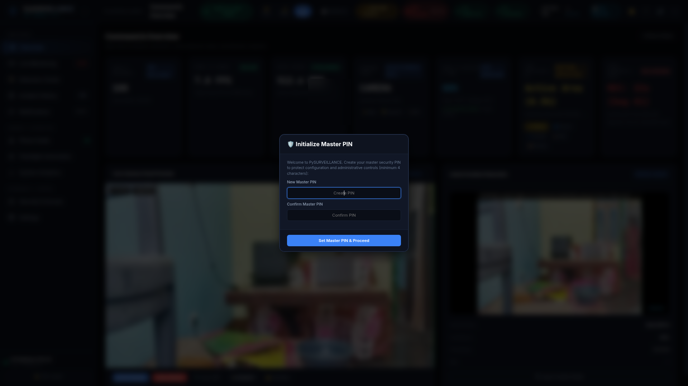
🔴 Live Stream Preview
Sub-50ms MJPEG/Canvas feed rendering with connection health and real-time framerate gauges.
🔋 Hardware & Battery Telemetry
Streams phone battery level (88%), operating temperature (31.5°C), and power state directly from device sensors.
🎯 Active Detection Card
Highlights current threat vectors, confidence scores, and multi-frame snapshot sequences.
Live Cinema Monitoring & Telemetry HUD
Full-framerate monitoring workspace with non-intrusive target tracking and floating alerts.
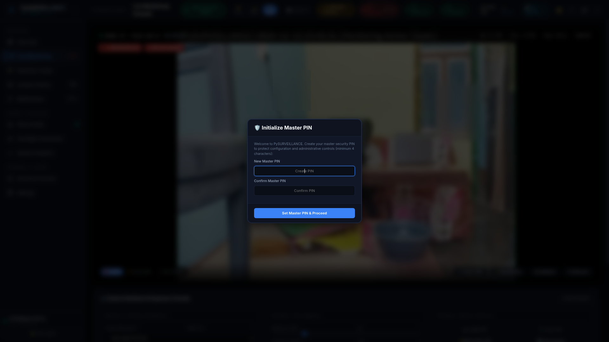
🚨 Floating Threat Alerts
Visual banner (🚨 PERSON 83% DETECTED) alerts operators instantly without blocking camera optics.
● Recording HUD Indicator
Dynamic status indicator tracks active recording duration, segment progression, and background worker queue.
🎛️ Software Tone Mapping
Client-side gamma LUT (0.5 – 2.0), brightness, contrast, and auto-HDR compensation for high-contrast backlit scenes.
Detection & Classification Center
Synchronizing OpenCV MOG2 background subtraction with YOLOv8n ONNX deep learning.
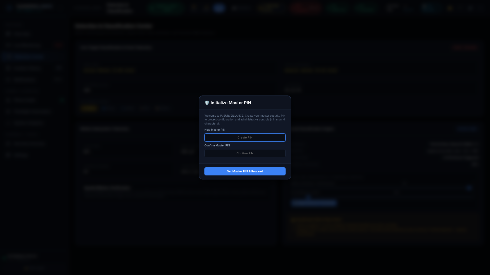
🎯 Real-Time Target Tracker
Renders bounding boxes and category confidence metrics in real time over detected perimeter breaches.
⚙️ Dynamic Sensitivity Controls
Runtime sliders for MOG2 VarThreshold sensitivity and AI confidence cutoff (default 45%).
🛡️ Classification Ethics Policy
Facial recognition strictly disabled. Untrusted animals report as "Animal detected — species unconfirmed".
Motion-Triggered Video Recording
Immediate motion capture with 15s inactivity reset and 60s maximum segment rotation.
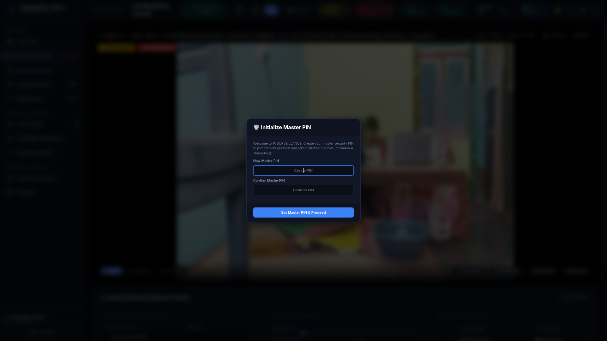
⚡ Zero-Delay Trigger
Starts recording immediately on camera motion; never waits for neural inference before saving video.
⏳ 15s Inactivity Reset
If motion pauses and resumes within 15 seconds, video capture continues in the same recording segment.
🔄 60s Segment Rollover
Long continuous events safely split into 60s segments linked to the same parent session without frame loss.
Chronological Event Timeline
Multi-frame event persistence with deduplicated sessions and acoustic correlation.
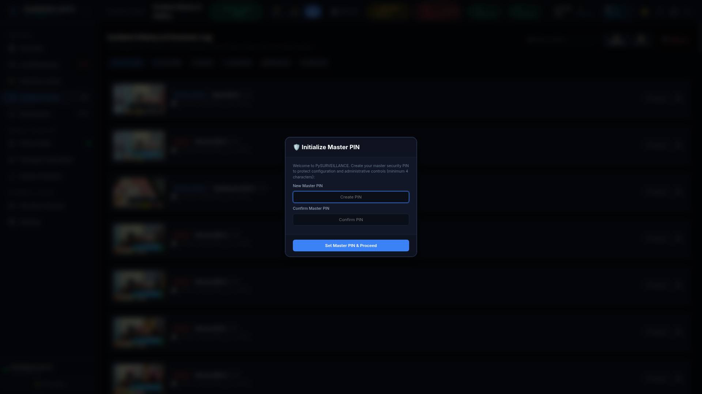
📸 Three-Stage Frame Capture
Captures Initial Trigger, Peak Motion Change, and Final Concluding frame for every incident.
🔎 Search & Category Filter
Instant filtering by threat category (Person, Animal, Bird, Monkey, Unknown object) and confidence.
💾 Zero-Cloud SQLite Retention
Point-in-time hot backups and automated rolling disk quotas protect active ongoing sessions.
Visual Incident Evidence Gallery
High-density snapshot grid for rapid investigative pattern screening and review.
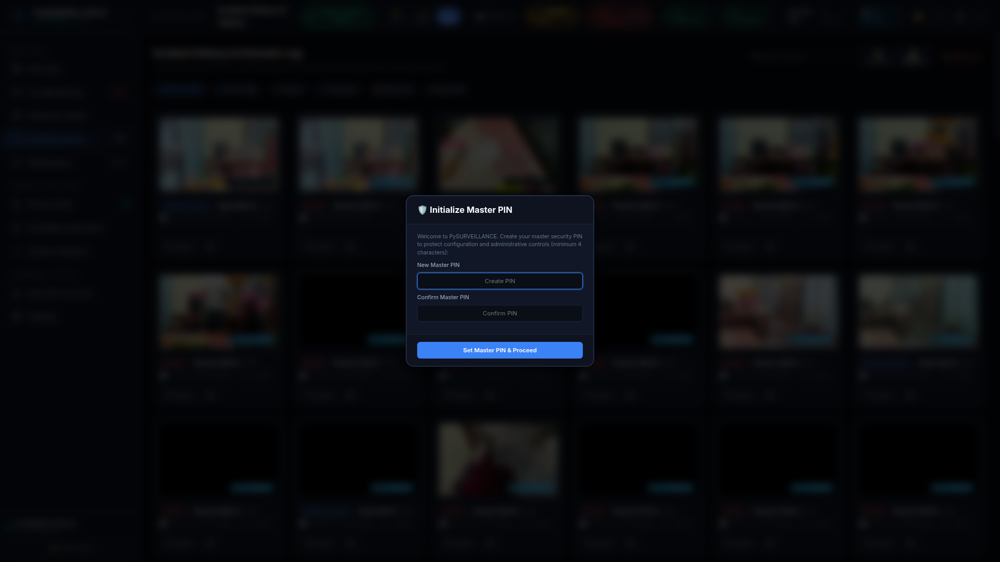
🖼️ Visual Evidence Cards
High-resolution thumbnails tagged with detection timestamps, classification badges, and confidence metrics.
⬇️ Direct Full-Res JPEG Export
One-click download of forensically tagged frames with embedded metadata.
🔍 Instant Modal Inspection
Click any thumbnail to launch the side-by-side forensic multi-frame inspector.
Forensic Inspection & Laplacian Extraction
Decoupled background worker extracts representative keyframes scored by Laplacian variance.
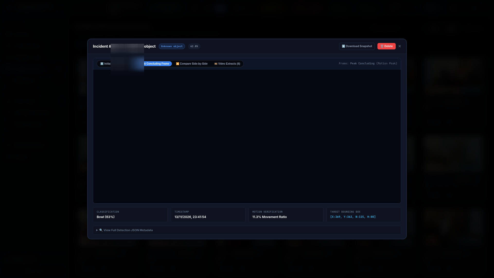
📐 Laplacian Variance Scoring
Calculates variance of the Laplacian (σ²(∇²I)) to reject motion-blurred frames and select sharpest keyframes.
🔄 Asynchronous Background Worker
Worker processes queued video segments (QUEUED ➔ PROCESSING ➔ COMPLETED) without impacting live surveillance.
📑 Multi-Frame Verification
Side-by-side visual analysis of Initial, Peak Change, Final, and sharpest video extractions.
Phone Microphone Telemetry & RMS Waveforms
Isolated network audio capture with dynamic ambient noise-floor adaptation.
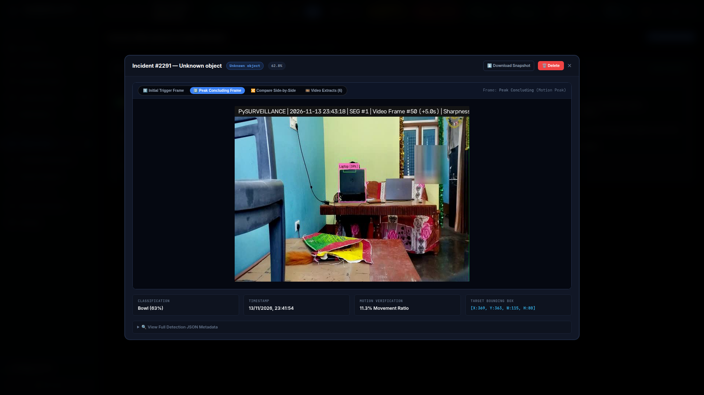
🎙️ Exclusive Camera Stream Audio
Captures uncompressed HTTP linear PCM/WAV directly from phone camera; strictly excludes laptop microphone.
📊 Dynamic Noise Floor Alpha
Continuous alpha filter tracks ambient room noise and computes real-time Signal-to-Noise Ratio (SNR).
🔒 Audio Privacy Preservation
Processes audio strictly in-memory for acoustic spikes; zero continuous voice recordings are written to disk.
Hardware-Adaptive Flashlight Automation
Darkness-aware illumination triggered exclusively by camera motion with daylight suppression.
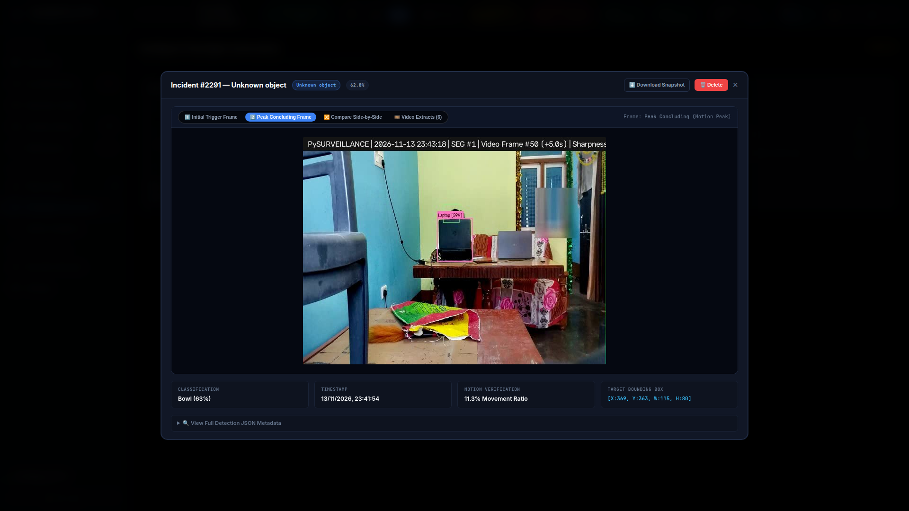
🌙 Low-Light Motion Trigger
Activates phone camera LED torch or external lighting only when qualifying motion occurs in darkness (< 45 lux).
☀️ Daylight Suppression
Motion during bright conditions does NOT activate torch, saving device battery and preventing glare.
⏱️ 15s Continuous-Motion Reset
Torch remains active while motion continues and cleanly turns off 15s after motion stops.
Device Notifications & Acoustic Deterrence
Instant push alerts with snapshot thumbnails and host-side acoustic deterrence sirens.
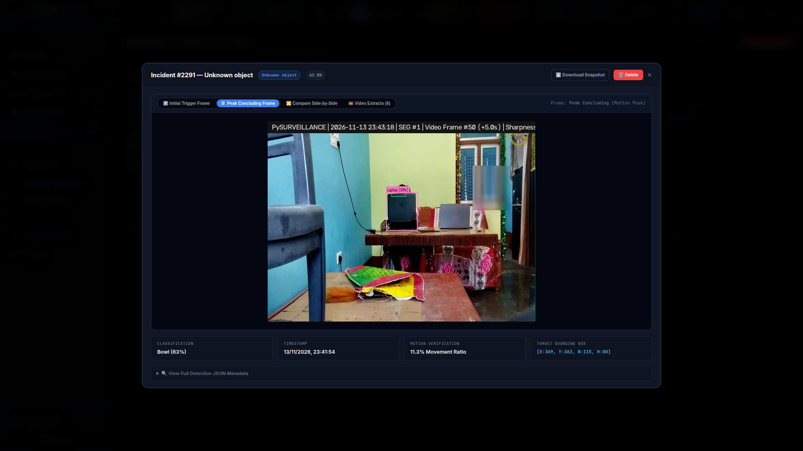
🔔 Native Browser & Mobile Push
Dispatches instant notifications with threat snapshot thumbnails directly to operator devices via Service Workers.
🔊 Host Laptop Speaker Siren
Plays synthesized deterrent sirens via paplay / aplay upon verified Person or Animal incursions.
🛡️ Category Alarm Cooldowns
Enforces category cooldown intervals (30s Person, 20s Animal) to eliminate alarm fatigue.
System Diagnostics & Hardware Telemetry
Resource-conscious performance benchmarking on low-power edge machines.
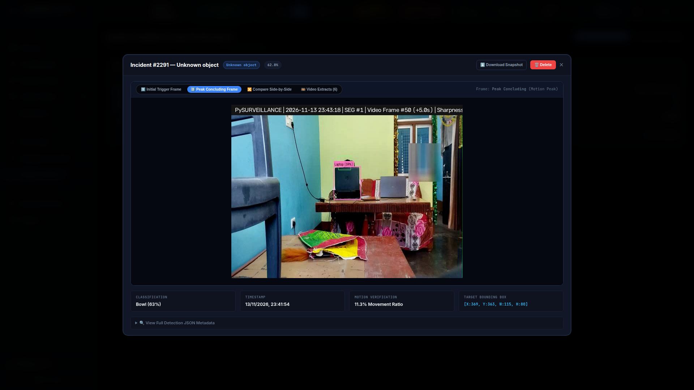
📈 FPS Telemetry
Continuous tracking of camera stream framerate (10-15 FPS) vs neural inference rate (1.5 FPS event-triggered).
💻 CPU & Memory Telemetry
Tracks system CPU% and process RSS memory with automated neural throttling when CPU exceeds 85%.
💽 Disk Quotas & Hot Backups
Automated rolling cleanup enforces storage quotas (2048 MB) and generates hot SQLite database backups.
Cryptographic Security & LAN Firewall
Zero default backdoors, PBKDF2 salted authentication, and private network isolation.
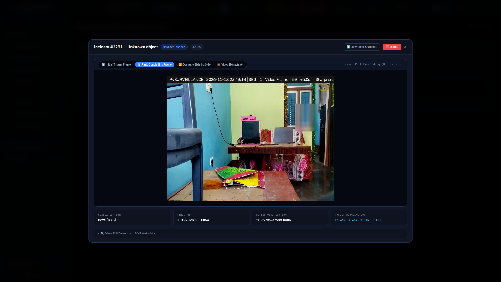
🔑 Salted PBKDF2-HMAC-SHA256
Master PIN hashed with 100,000 rounds and random 16-byte salt; plaintext credentials are never written to disk.
🛑 Brute-Force Rate Limiting
5 consecutive failed PIN attempts trigger an automatic 300-second IP lockout (HTTP 429).
🛡️ RFC 1918 Private Firewall
Rejects public internet requests by default (HTTP 403), permitting only private LAN subnets and loopback.